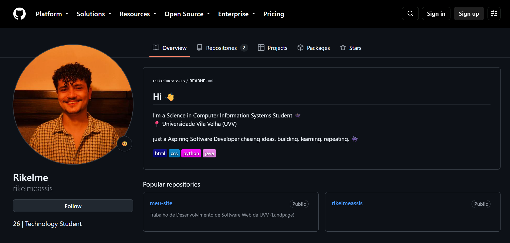

Meu GitHub
O GitHub é uma plataforma que utilizo para armazenar meus projetos, estudos e atividades de programação.

Você pode acessar meu perfil através do link abaixo:
Conhecimentos em desenvolvimento
| Linguagem/Tecnologia | O que estudo |
|---|---|
| HTML | Estrutura de páginas Web |
| CSS | Estilização e organização das páginas |
| Java | Programação e estruturas de dados |
| Python | Programação e estudos relacionados a dados |
Projetos acadêmicos
- Projetos de desenvolvimento Web
- Trabalhos relacionados a banco de dados
- Exercícios de programação em Java
- Projetos de experiência do usuário
Minha evolução
Estou utilizando meus estudos e projetos acadêmicos para construir meu conhecimento em programação e desenvolvimento de software.